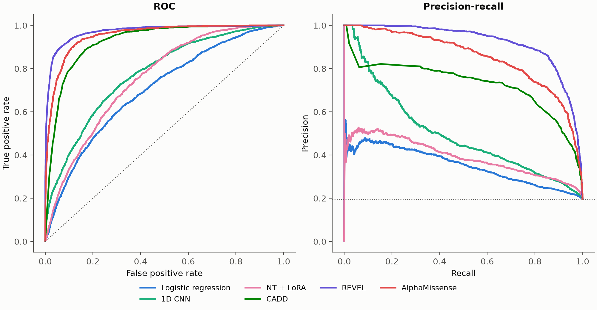
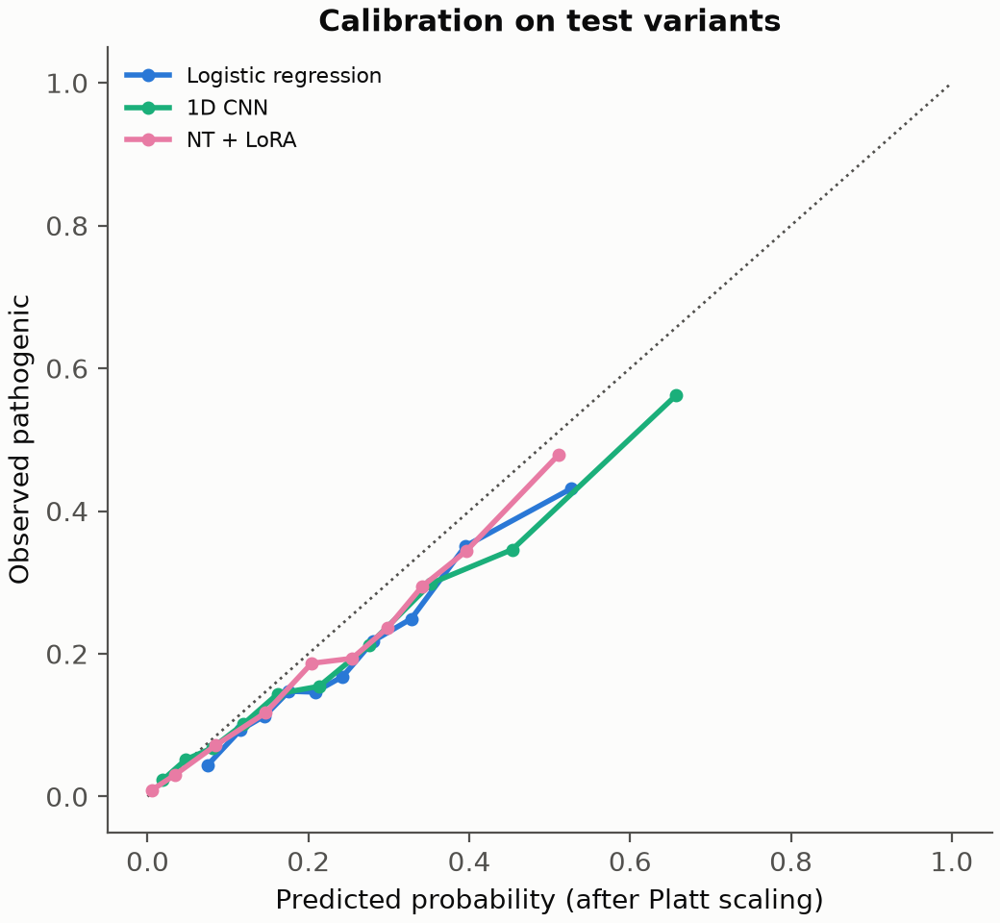

Predicting whether a missense variant is pathogenic from the DNA sequence around it.
Chromosome-split test set (chr8, chr21). Clinical scores (REVEL, AlphaMissense, CADD) are shown alongside the sequence-only models trained here. Bars are 95% CIs.
| model | AUROC (95% CI) | AUPRC (95% CI) | within-gene AUROC |
|---|---|---|---|
| REVEL | 0.973 (0.965-0.979) | 0.921 (0.885-0.948) | 0.953 |
| AlphaMissense | 0.954 (0.941-0.967) | 0.851 (0.789-0.903) | 0.959 |
| CADD | 0.926 (0.909-0.945) | 0.723 (0.634-0.809) | 0.912 |
| 1D CNN | 0.775 (0.745-0.804) | 0.497 (0.388-0.591) | 0.753 |
| NT + LoRA | 0.754 (0.713-0.789) | 0.391 (0.304-0.472) | 0.662 |
| logistic regression | 0.701 (0.678-0.727) | 0.352 (0.277-0.440) | 0.676 |


ClinVar missense SNVs with a clear label and at least one review star, split by chromosome to avoid leakage. 207,018 variants across 15,018 genes.
| split | chromosomes | benign | pathogenic |
|---|---|---|---|
| Train | everything else | 134,144 | 57,619 |
| Validation | chr10 | 4,894 | 1,684 |
| Test | chr8, chr21 | 6,976 | 1,701 |